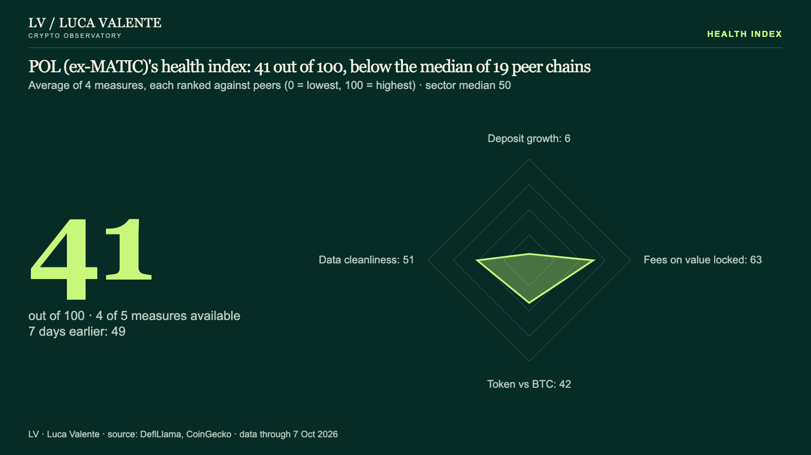

Health index · 7 Oct 2026
POL (ex-MATIC)'s health index: 41 out of 100, below the median of 19 peer chains


Reading
POL (ex-MATIC)'s health index was 41 out of 100 on 7 Oct 2026, −8 over seven days. The index is the average rank against sector peers on up to five measures: deposit growth, fees on value locked, transactions, token against BTC, data cleanliness. It covers protocols above $50M in value locked with at least 90 days of data; sectors are not compared with each other.
Data through 7 Oct 2026 · Source: DefiLlama, CoinGecko · Data (CSV) on GitHub